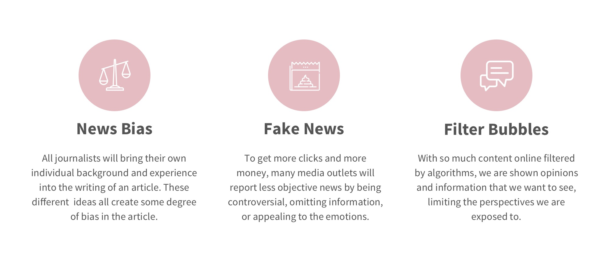
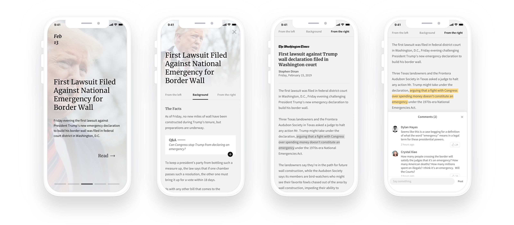
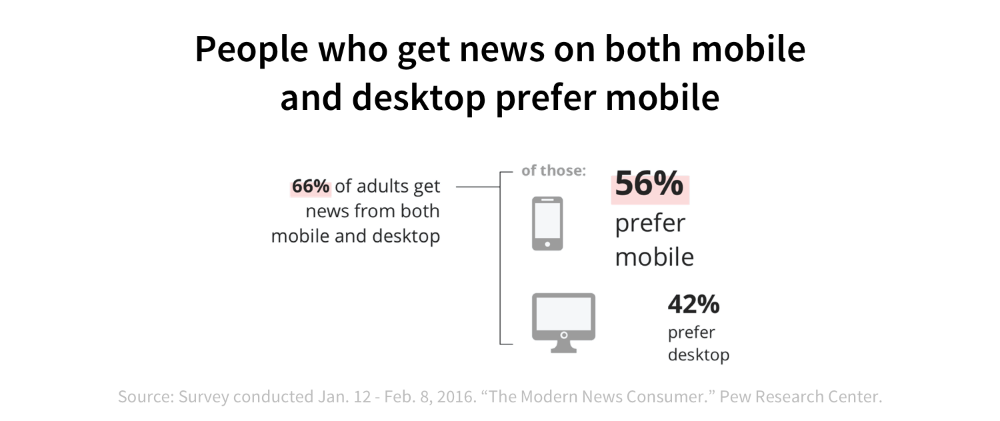
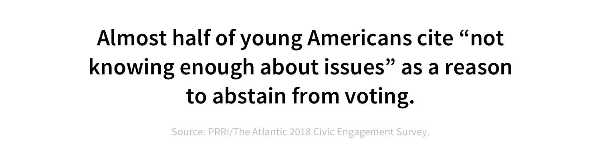
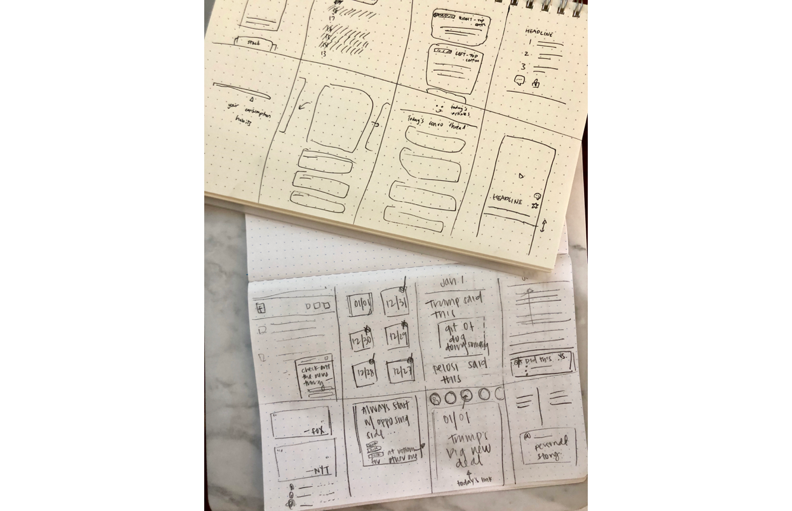

, building tools that teams depend on to manage their work.
, building tools that teams depend on to manage their work.Designing a News App in an Age of Filter Bubbles
Designing an experience to help make it easier to develop well-rounded news reading habits.
It's hard to stay informed.
There is such an abundance of information online, there's the rise of fake news, and also filter bubbles caused by social media. We designed a product to help people understand the world around them: a mobile app that makes it easier to get into the routine of consuming well-rounded news.
The Problem

Even for people who are aware of these issues, it is a struggle to stay informed on current events due to inherent news biases and the issues plaguing the news media industry.
Design Opportunity
How might we make it easier for young Americans to stay informed about current events?
The Outcome

A mobile-first application that exposes readers to multiple perspectives from multiple news outlets, provides any information needed to fully understand the events, and avoids providing overwhelming amounts of information to consume.
01. Preliminary research
So, how do people read the news?
Some general research
We first started with general research to get a better understanding of people's news consumption behavior. Some of our insights:


There exists a popular belief that young Americans are apathetic and disengaged from current events. And while we discovered through this research that they tend to be more cynical, they are not completely removed from it and the majority are concerned about issues and the future.
We sought to empower these misunderstood young Americans who are interested in being informed, but who have not found success thus far.
And seeing the shift of news readership to the web and on mobile phones, we focused our designs on the mobile platform.
Interviews
Having narrowed down our scope a little, we reached out to a few people who matched our target user (young Americans with a desire to stay up-to-date on current events). We wanted to learn more about their news consumption habits and pain points they currently experience. Here's a few key points:
02. Project scope
Using our research insights to define the project
With our research insights, we were able to understand our problem space and design opportunity. We decided to narrow down on a few specific focuses:
- focusing on mobile
- designing for young Americans
- making news easier to digest, so understanding current events requires less effort
- offering easy access to different perspectives, so readers don't have to put in so much extra effort to do so
- building critical thinking skills, so readers can learn to form their own opinions
03. Ideation
Crazy eights
(8 minutes to create 8 sketches of user interaction)
Because of how fast-paced (stressful) this exercise is, it helped us to generate a large quantity of very varied solutions, instead just getting attached to our first idea. In particular, it allowed us to explore ideas outside of the standard 'big list of articles you can read' structure that we had taken as standard among news apps.

04. Iteration
Mid-fidelity wireframes
Mid-fidelity wireframes helped me further visualize a handfull of possible solutions. This was especially useful in helping incorporate the research insight that users want an interface that offers articles from multiple perspectives, but still does not require too much extra effort to do so.

Some of these, which limited the number of topics/articles the user is shown in a day, contained critical ideas of preventing information overload that continued to influence our final designs.
High-fidelity and prototyping
Reading articles
Focus on 5-7 issues a day and get easy access to all the information you need to be well informed on that issue.
Article comments
Engage in discussion on particular snippets of an article. Learn how to think critically about the contents of articles you read.